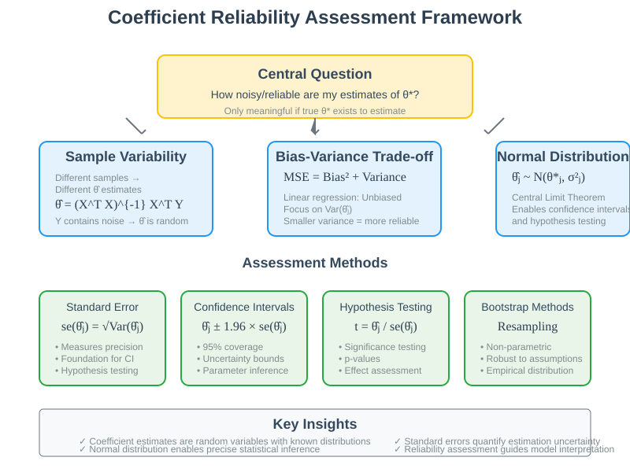

Linear Regression: Reliability of Coefficient Estimates
Quick Navigation
- Course Overview
- Statistical Foundation Framework
- Sample Variability and Estimation
- Bias-Variance Decomposition
- Distribution of Coefficient Estimates
- Standard Error and Confidence Intervals
- Normal Distribution Properties
- Practical Applications
- Try It Yourself
- References & Further Reading
Course Overview
The reliability of coefficient estimates represents a fundamental aspect of statistical inference in linear regression, addressing the critical question of how much confidence we can place in our parameter estimates. This comprehensive guide explores the theoretical foundations of estimation uncertainty, providing both mathematical rigor and practical implementation strategies for assessing coefficient reliability.
Understanding coefficient reliability enables practitioners to quantify the uncertainty inherent in their estimates, construct confidence intervals, and perform hypothesis testing. This knowledge is essential for making informed decisions about model parameters and their statistical significance in real-world applications.

The framework addresses the fundamental question: "How noisy or reliable are my estimates of the model weights?" This question only makes sense when we assume there exists a true underlying parameter that we are attempting to estimate through our finite sample analysis.
Statistical Foundation Framework
🔵 Theoretical Assumptions
The reliability assessment of coefficient estimates requires establishing a theoretical framework that connects sample-based estimates to underlying population parameters. This framework assumes the existence of true population parameters that our estimation procedures attempt to recover.
Population-Based Interpretation
The analysis assumes a large true population from which we draw finite samples to estimate the best linear predictor. Each different sample from this population would yield slightly different coefficient estimates, creating natural variability in our results.
Structural Model Framework
For more precise analytical treatment, we assume a structural linear model:
Yi = (θ*)ᵀXi + Wi
Where: - θ* represents the true population parameters - Wi denotes independent noise terms with zero mean and variance σ² - The linear structure represents the true underlying relationship

Key Implications
Sampling Variability
Different representative samples from the same population will produce different coefficient estimates, creating natural uncertainty in our parameter estimates.
Estimation Uncertainty
The randomness in sampling directly affects our results, making coefficient estimates random variables rather than fixed constants.
Statistical Inference
Understanding this variability enables construction of confidence intervals and hypothesis tests for assessing parameter significance.
Sample Variability and Estimation
🟢 The Random Nature of Coefficients
Coefficient estimates θ̂ are functions of both the design matrix X and the response vector Y. Since Y contains noise terms, the estimates themselves become random variables with specific statistical properties.
Regression Formula as Random Variable
The closed-form solution for linear regression:
θ̂ = (XᵀX)⁻¹XᵀY
demonstrates that estimates depend on the random component Y, making θ̂ a random variable that varies across different samples from the same population.
Sources of Variability
Data Sampling Randomness
Each sample drawn from the population contains different individuals, leading to different X and Y values and consequently different coefficient estimates.
Noise Term Influence
The noise terms Wi in the structural model directly propagate through to the coefficient estimates, creating uncertainty in the final parameter values.
Finite Sample Effects
Limited sample sizes amplify the influence of individual observations, increasing the variability of coefficient estimates compared to infinite population parameters.

Practical Implications
Trust and Reliability
High variability in coefficient estimates across potential samples indicates lower reliability and suggests caution in interpreting specific parameter values.
Model Stability
Understanding estimate variability helps assess whether observed coefficients represent stable relationships or might be artifacts of particular sample characteristics.
Bias-Variance Decomposition
🔴 Mean Squared Error Framework
The accuracy of coefficient estimates can be systematically analyzed through the bias-variance decomposition, which partitions the mean squared error into interpretable components.
Mathematical Decomposition
For the j-th coefficient estimate, the mean squared error decomposes as:
E[(θ̂j - θj)²] = (E[θ̂j] - θj)² + Var(θ̂j)
This fundamental decomposition separates systematic errors (bias) from random variability (variance).

Component Analysis
Bias Component: (E[θ̂j] - θ*j)²
The bias measures systematic deviation between the expected value of estimates and the true parameter. This component captures whether the estimation procedure systematically over- or under-estimates the true parameter.
Variance Component: Var(θ̂j)
The variance quantifies the spread of estimates around their expected value, measuring how much estimates would vary if the experiment were repeated with different samples.
Linear Regression Properties
Unbiased Estimation
Fortunately, linear regression produces unbiased estimates under the standard assumptions:
E[θ̂j] = θ*j
This property means the bias component equals zero, and the mean squared error reduces to just the variance component.
Focus on Variance
Since linear regression is unbiased, reliability assessment focuses primarily on quantifying and minimizing the variance of coefficient estimates.
Distribution of Coefficient Estimates
🟡 Normal Distribution Properties
Under the structural model assumptions, coefficient estimates follow a multivariate normal distribution, enabling precise statistical inference and uncertainty quantification.
Central Limit Theorem Foundation
The normality of coefficient estimates arises through the Central Limit Theorem. The estimation formula involves summing many random noise terms Wi, and when these terms are independent and identically distributed, their sum approaches a normal distribution.
Approximate Normality
For large datasets, coefficient estimates are approximately normally distributed:
θ̂j ~ N(θ*j, σ²j)
Exact Normality
When noise terms Wi are exactly normal, coefficient estimates are exactly normally distributed regardless of sample size.

Multivariate Normal Structure
The complete coefficient vector θ̂ follows a multivariate normal distribution, meaning that any linear combination of the coefficients is also normally distributed. This property enables sophisticated statistical inference procedures.
Statistical Implications
Probability Statements
Normal distribution properties allow precise probability statements about coefficient estimates, such as the probability that an estimate falls within specific ranges.
Confidence Intervals
The normal distribution enables construction of confidence intervals with known coverage probabilities.
Hypothesis Testing
Normal distribution assumptions underpin standard hypothesis testing procedures for coefficient significance.
Standard Error and Confidence Intervals
🔵 Standard Error Definition
The standard error represents the standard deviation of the coefficient estimate distribution, providing a direct measure of estimation uncertainty.
Mathematical Definition
For the j-th coefficient:
σj = √(Var(θ̂j)) = se(θ̂j)
The standard error quantifies how much coefficient estimates would vary across different samples from the same population.

Confidence Interval Construction
95% Confidence Intervals
Using the normal distribution property, we can construct confidence intervals:
θ̂j ± 1.96 × se(θ̂j)
This interval contains the true parameter θ*j with 95% probability under repeated sampling.
General Confidence Level
For confidence level (1-α), the confidence interval becomes:
θ̂j ± z(α/2) × se(θ̂j)
Where z(α/2) is the appropriate critical value from the standard normal distribution.
Interpretation Framework
Precision Indicator
Smaller standard errors indicate more precise estimates, suggesting greater confidence in the parameter values.
Sample Size Effects
Standard errors generally decrease with larger sample sizes, reflecting improved precision from additional data.
Design Matrix Influence
The structure of the design matrix X affects standard error magnitudes, with well-conditioned designs producing smaller standard errors.
Normal Distribution Properties
🟢 95% Rule and Practical Applications
The normal distribution of coefficient estimates provides powerful tools for statistical inference through well-established probability properties.
Two Standard Deviation Rule
For normally distributed estimates, approximately 95% of the probability mass falls within two standard deviations of the mean:
P(θj - 2σj ≤ θ̂j ≤ θj + 2σj) ≈ 0.95
This property enables intuitive interpretation of estimation uncertainty.

Practical Applications
Hypothesis Testing
The normal distribution enables testing hypotheses about parameter values: - Null hypothesis: θ*j = 0 (no effect) - Test statistic: t = θ̂j / se(θ̂j) - Decision rule based on critical values
Effect Size Assessment
Standard errors help distinguish between statistically significant and practically meaningful effects by providing context for coefficient magnitudes.
Model Comparison
Comparing standard errors across different model specifications helps assess the impact of design choices on estimation precision.
Computational Considerations
Standard Error Calculation
Computing standard errors requires estimating the variance-covariance matrix of coefficient estimates, typically involving matrix operations on the design matrix.
Robust Standard Errors
In practice, standard error calculations may need adjustment for violations of homoscedasticity or independence assumptions.
Practical Applications
🔵 Implementation and Assessment
Understanding coefficient reliability enables informed decision-making in model interpretation, feature selection, and scientific inference.
Marketing Campaign Example Revisited
Consider the marketing campaign analysis with coefficient estimates and their standard errors:
- TV coefficient: 0.046 ± 0.008 (se)
- Radio coefficient: 0.19 ± 0.012 (se)
- Newspaper coefficient: -0.001 ± 0.003 (se)
Interpretation Guidelines
TV Advertising: The coefficient 0.046 with standard error 0.008 suggests high precision. The 95% confidence interval [0.030, 0.062] indicates strong evidence of positive impact.
Radio Advertising: The coefficient 0.19 with standard error 0.012 shows even stronger evidence, with confidence interval [0.166, 0.214] well above zero.
Newspaper Advertising: The coefficient -0.001 with standard error 0.003 includes zero in its confidence interval [-0.007, 0.005], suggesting no significant effect.
👉 Try It Yourself

import numpy as np
import pandas as pd
from sklearn.linear_model import LinearRegression
from scipy import stats
import matplotlib.pyplot as plt
def calculate_standard_errors(X, y, model):
"""
Calculate standard errors for linear regression coefficients
"""
n, p = X.shape
# Predictions and residuals
y_pred = model.predict(X)
residuals = y - y_pred
# Residual sum of squares
rss = np.sum(residuals**2)
# Degrees of freedom
df = n - p - 1 # subtract 1 for intercept
# Mean squared error
mse = rss / df
# Design matrix with intercept
X_design = np.column_stack([np.ones(n), X])
# Variance-covariance matrix
var_covar_matrix = mse * np.linalg.inv(X_design.T @ X_design)
# Standard errors
standard_errors = np.sqrt(np.diag(var_covar_matrix))
return standard_errors, mse
def coefficient_reliability_analysis(X, y, feature_names=None):
"""
Comprehensive coefficient reliability analysis
"""
# Fit model
model = LinearRegression()
model.fit(X, y)
# Calculate standard errors
se, mse = calculate_standard_errors(X, y, model)
# Coefficients (including intercept)
coefficients = np.concatenate([[model.intercept_], model.coef_])
# t-statistics
t_stats = coefficients / se
# p-values (two-tailed test)
n, p = X.shape
df = n - p - 1
p_values = 2 * (1 - stats.t.cdf(np.abs(t_stats), df))
# 95% Confidence intervals
t_critical = stats.t.ppf(0.975, df)
ci_lower = coefficients - t_critical * se
ci_upper = coefficients + t_critical * se
# Create results DataFrame
if feature_names is None:
feature_names = [f'X{i+1}' for i in range(p)]
names = ['Intercept'] + feature_names
results = pd.DataFrame({
'Coefficient': coefficients,
'Std_Error': se,
't_Statistic': t_stats,
'p_Value': p_values,
'CI_Lower': ci_lower,
'CI_Upper': ci_upper
}, index=names)
return results, model
# Example with marketing data
np.random.seed(42)
n_samples = 200
# Generate correlated advertising data
tv = np.random.uniform(0, 300, n_samples)
radio = np.random.uniform(0, 50, n_samples)
newspaper = np.random.uniform(0, 100, n_samples)
# True coefficients
true_intercept = 2.94
true_tv = 0.046
true_radio = 0.19
true_newspaper = -0.001
# Generate sales with noise
noise = np.random.normal(0, 1.5, n_samples)
sales = (true_intercept + true_tv * tv + true_radio * radio +
true_newspaper * newspaper + noise)
# Prepare data
X = np.column_stack([tv, radio, newspaper])
feature_names = ['TV', 'Radio', 'Newspaper']
# Run analysis
results, model = coefficient_reliability_analysis(X, sales, feature_names)
print("Coefficient Reliability Analysis")
print("=" * 50)
print(results.round(4))
# Visualization
fig, axes = plt.subplots(1, 3, figsize=(15, 5))
for i, (name, coef, se) in enumerate(zip(feature_names,
model.coef_,
results.iloc[1:]['Std_Error'])):
# Normal distribution of coefficient
x = np.linspace(coef - 3*se, coef + 3*se, 100)
y = stats.norm.pdf(x, coef, se)
axes[i].plot(x, y, 'b-', linewidth=2, label=f'{name} Coefficient')
axes[i].axvline(coef, color='red', linestyle='--', label='Estimate')
axes[i].axvline(coef - 1.96*se, color='green', linestyle=':', label='95% CI')
axes[i].axvline(coef + 1.96*se, color='green', linestyle=':')
axes[i].fill_between(x, y, alpha=0.3)
axes[i].set_title(f'{name}: {coef:.3f} ± {se:.3f}')
axes[i].set_xlabel('Coefficient Value')
axes[i].set_ylabel('Density')
axes[i].legend()
axes[i].grid(True, alpha=0.3)
plt.tight_layout()
plt.show()
# Interpretation
print("\nInterpretation:")
for name, row in results.iterrows():
if row['p_Value'] < 0.05:
significance = "statistically significant"
else:
significance = "not statistically significant"
print(f"{name}: {row['Coefficient']:.3f} ({significance})")
print(f" 95% CI: [{row['CI_Lower']:.3f}, {row['CI_Upper']:.3f}]")
Try It Yourself
🔧 Hands-On Statistical Inference
Confidence Interval Simulation
👉 Monte Carlo Confidence Interval Analysis

import numpy as np
import matplotlib.pyplot as plt
from scipy import stats
def simulate_confidence_intervals(n_simulations=1000, sample_size=100):
"""
Simulate confidence intervals to demonstrate coverage properties
"""
# True parameters
true_slope = 2.0
true_intercept = 1.0
noise_std = 1.5
# Storage for results
slopes = []
slope_cis = []
coverage_count = 0
for i in range(n_simulations):
# Generate data
X = np.random.uniform(0, 10, sample_size)
y = true_intercept + true_slope * X + np.random.normal(0, noise_std, sample_size)
# Fit model
X_design = np.column_stack([np.ones(sample_size), X])
coefficients = np.linalg.solve(X_design.T @ X_design, X_design.T @ y)
# Calculate standard errors
y_pred = X_design @ coefficients
residuals = y - y_pred
mse = np.sum(residuals**2) / (sample_size - 2)
var_covar = mse * np.linalg.inv(X_design.T @ X_design)
se_slope = np.sqrt(var_covar[1, 1])
# Confidence interval
t_critical = stats.t.ppf(0.975, sample_size - 2)
ci_lower = coefficients[1] - t_critical * se_slope
ci_upper = coefficients[1] + t_critical * se_slope
# Store results
slopes.append(coefficients[1])
slope_cis.append((ci_lower, ci_upper))
# Check coverage
if ci_lower <= true_slope <= ci_upper:
coverage_count += 1
coverage_rate = coverage_count / n_simulations
return slopes, slope_cis, coverage_rate
# Run simulation
slopes, cis, coverage = simulate_confidence_intervals()
print(f"Coverage Rate: {coverage:.3f} (Expected: 0.950)")
print(f"Mean Slope Estimate: {np.mean(slopes):.3f} (True: 2.000)")
print(f"Std Dev of Estimates: {np.std(slopes):.3f}")
# Visualize first 50 confidence intervals
fig, ax = plt.subplots(figsize=(12, 8))
for i in range(50):
ci_lower, ci_upper = cis[i]
color = 'green' if ci_lower <= 2.0 <= ci_upper else 'red'
ax.plot([ci_lower, ci_upper], [i, i], color=color, linewidth=2)
ax.plot(slopes[i], i, 'o', color=color, markersize=4)
ax.axvline(2.0, color='blue', linestyle='--', linewidth=2, label='True Value')
ax.set_xlabel('Slope Coefficient')
ax.set_ylabel('Simulation Number')
ax.set_title('Confidence Intervals for Slope Coefficient\n(Green: Contains True Value, Red: Misses)')
ax.legend()
ax.grid(True, alpha=0.3)
plt.tight_layout()
plt.show()
Bootstrap Standard Errors
👉 Bootstrap vs Analytical Standard Errors

def bootstrap_standard_errors(X, y, n_bootstrap=1000):
"""
Calculate bootstrap standard errors for coefficient estimates
"""
n_samples = len(y)
bootstrap_coefficients = []
for _ in range(n_bootstrap):
# Bootstrap sample
indices = np.random.choice(n_samples, n_samples, replace=True)
X_boot = X[indices]
y_boot = y[indices]
# Fit model
model = LinearRegression()
model.fit(X_boot, y_boot)
# Store coefficients
coefficients = np.concatenate([[model.intercept_], model.coef_])
bootstrap_coefficients.append(coefficients)
bootstrap_coefficients = np.array(bootstrap_coefficients)
bootstrap_se = np.std(bootstrap_coefficients, axis=0)
return bootstrap_se, bootstrap_coefficients
# Compare bootstrap vs analytical standard errors
bootstrap_se, boot_coefs = bootstrap_standard_errors(X, sales)
analytical_se = results['Std_Error'].values
comparison = pd.DataFrame({
'Analytical_SE': analytical_se,
'Bootstrap_SE': bootstrap_se,
'Difference': np.abs(analytical_se - bootstrap_se)
}, index=results.index)
print("Standard Error Comparison:")
print(comparison.round(4))
Hugging Face Integration
Explore statistical analysis tools and datasets: - Statistical Analysis Models - Regression Analysis Datasets - Statistical Computing Libraries
References & Further Reading
📚 Essential Resources
Statistical Theory Foundations
- Casella, G. & Berger, R.L. (2002): "Statistical Inference" - Comprehensive treatment of estimation theory and confidence intervals
- Lehmann, E.L. & Casella, G. (1998): "Theory of Point Estimation" - Advanced treatment of bias-variance decomposition and estimator properties
- Cox, D.R. & Hinkley, D.V. (1974): "Theoretical Statistics" - Classical foundation of maximum likelihood theory and asymptotic properties
Linear Model Theory and Applications
- Seber, G.A.F. & Lee, A.J. (2003): "Linear Regression Analysis" - Detailed mathematical treatment of coefficient reliability
- Montgomery, D.C., Peck, E.A., Vining, G.G. (2012): "Introduction to Linear Regression Analysis" - Practical approach to standard errors and confidence intervals
- Weisberg, S. (2014): "Applied Linear Regression" - Modern computational approaches to regression diagnostics
Bootstrap and Resampling Methods
- Efron, B. & Tibshirani, R.J. (1993): "An Introduction to the Bootstrap" - Foundational text on bootstrap methods for standard error estimation
- Davison, A.C. & Hinkley, D.V. (1997): "Bootstrap Methods and Their Applications" - Advanced bootstrap techniques for regression analysis
Computational Implementation
- Scikit-learn Statistical Analysis - Implementation of regression with statistical inference
- Statsmodels Documentation - Comprehensive statistical modeling library
- SciPy Statistical Functions - Statistical distributions and hypothesis testing
Research Applications and Extensions
- Google AI Research: Statistical Machine Learning - Modern approaches to uncertainty quantification
- Microsoft Research: Bayesian Methods - Uncertainty quantification in machine learning
- Meta AI Research: Statistical Inference - Large-scale statistical inference applications
Advanced Topics and Extensions
- Robust Standard Errors: Heteroscedasticity-consistent estimators for assumption violations
- Bayesian Linear Regression: Posterior distributions for full uncertainty quantification
- Regularized Regression: Standard error adjustments for Ridge and Lasso regression
- Mixed Effects Models: Random effects and hierarchical modeling extensions